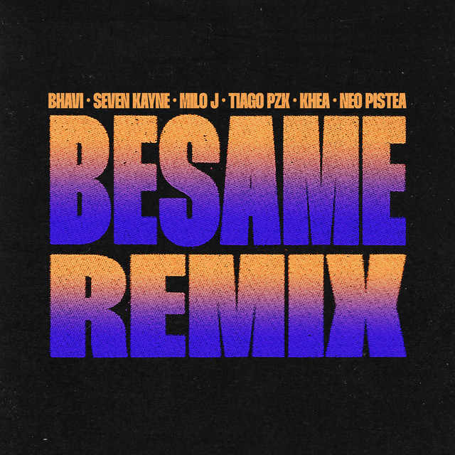

¡Descubre lo último de Mora la fruta infiel, solo aquí en Upmf-Music!
🌟 Sumérgete en el universo único de Mora con su más reciente lanzamiento.
Con ritmos cautivadores y letras profundas,
su nueva música promete llevarte a un viaje emocional que no querrás perderte.
¡Lo último de Natanael Cano, el rey de los Corridos Tumbados, solo aquí en Upmf-Music!
🎤👑 Vive la revolución musical con los nuevos éxitos de Natanael Cano
que están marcando un antes y un después en el género regional mexicano.
"The Neighbourhood", banda estadounidense formada en 2011 en California. Su estilo musical abarca el rock alternativo, el indie pop y el R&B, y se caracterizan por sus letras melancólicas y su estética distintiva.
"The Neighbourhood" ha ganado popularidad con canciones como "Sweater Weather", "Daddy Issues", "R.I.P. 2 My Youth", entre otras.
Su música a menudo presenta una combinación única de sonidos atmosféricos, sintetizadores y letras introspectivas.
Si te gustan bandas con un enfoque artístico y ecléctico, definitivamente deberías darle una escucha a "The Neighbourhood"
Morat es una banda colombiana de pop y folk que destaca por sus melodías pegajosas y letras emotivas.
Con éxitos como "Cómo Te Atreves" y "Besos En Guerra", su música combina influencias tradicionales con un toque moderno.
Ideal para quienes buscan ritmos alegres y canciones que llegan al corazón.
¡Dales una escucha y prepárate para añadir algunas de sus canciones a tus favoritas!
¡Prepárate para sumergirte en lo más vibrante de la escena urbana argentina con el remix de "Bésame"!
Este tema reúne a algunos de los nombres más resonantes del trap y reggaetón argentino: Thiago PZK, Bhavi, Neo Pistéa, y Khea.
Cada uno de estos artistas aporta su estilo único y una energía contagiosa, creando una colaboración explosiva.
"Bésame" es un tema que combina ritmos intensos con letras seductoras, ideal para quienes disfrutan de música con beats urbanos y un toque de romance.
La producción es pulida, y la mezcla de voces de estos talentosos artistas argentinos garantiza que no podrás dejar de escucharla.
Si estás buscando algo fresco para actualizar tu playlist y darle sabor a tus días con sonidos directamente desde el corazón del trap y reggaetón latinoamericano,
"Bésame Remix" es una elección perfecta. ¡Dale play y deja que el ritmo te lleve!

Rels B, también conocido como Skinny Flakk, es un destacado artista de la escena urbana española que ha ganado reconocimiento por su estilo único y sus letras sinceras.
Su música mezcla elementos de hip-hop, R&B y soul, creando un sonido distintivo que captura la atención de una audiencia internacional.
"Shorty Q Te Vaya Bnn" es uno de los temas más pegajosos de Rels B.
En esta canción, Rels ofrece un ritmo suave combinado con letras que exploran temas de relaciones y desamor, todo presentado con su característico estilo relajado y carismático.
La canción es un excelente ejemplo de su habilidad para crear música que es tanto reflexiva como entretenida.
Si te gusta la música con beats relajantes y letras que te hacen pensar, "Shorty Q Te Vaya Bnn" de Rels B es una elección perfecta.
Te invito a darle una escucha: podría convertirse en tu nueva canción favorita para esos momentos de relax. ¡Disfrútala y deja que el estilo único de Rels B te envuelva!
Saiko es un talentoso cantante y compositor chileno conocido por su estilo único y emotivo.
Su música abarca géneros como el pop y el rock alternativo, y se destaca por letras profundas y melodías envolventes que llegan al corazón de los oyentes.
"Cosas que nunca te dije" es una de las canciones más emblemáticas de Saiko.
En esta canción, Saiko nos lleva en un viaje emocional mientras explora temas de amor, arrepentimiento y la lucha por la comunicación en las relaciones.
Su voz conmovedora y la instrumentación cuidadosamente elaborada crean una experiencia auditiva cautivadora que resuena con muchos.
Ahora, Saiko está promocionando el remix de "Polaris", una colaboración que promete llevar su música a nuevas alturas.
Con este remix, Saiko continúa cautivando a su audiencia con su talento excepcional y su capacidad para reinventarse.
Si buscas música que te haga reflexionar y te lleve en un viaje emocional, "Cosas que nunca te dije" de Saiko es una excelente opción.
Y no te pierdas el remix de "Polaris", ¡una oportunidad para descubrir una nueva dimensión de su arte! ¡Dale una oportunidad y deja que la música de Saiko te envuelva en su magia!